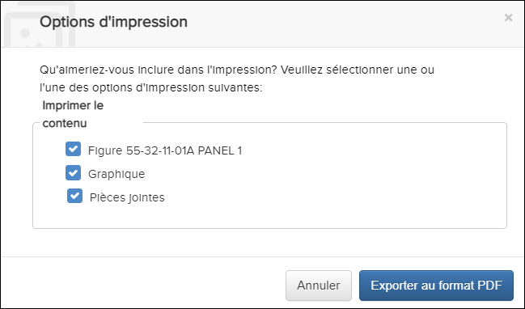
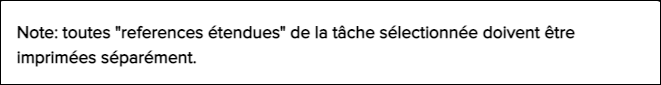
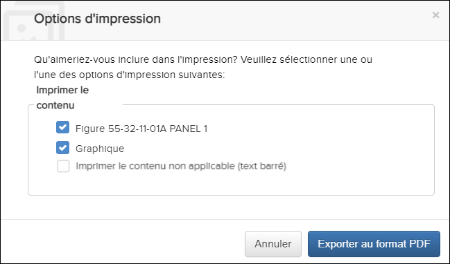
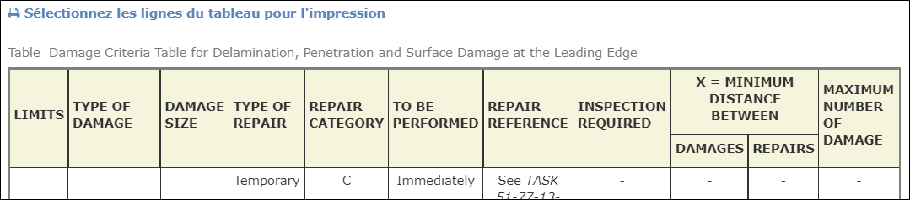
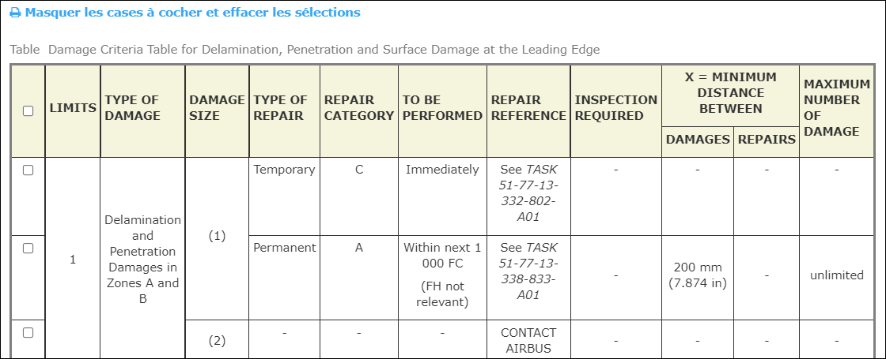
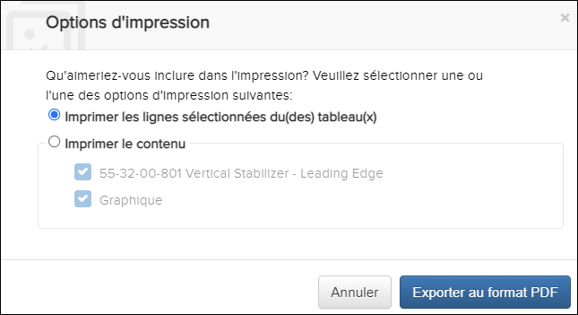
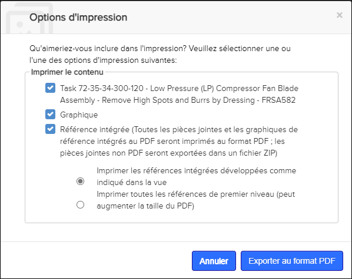
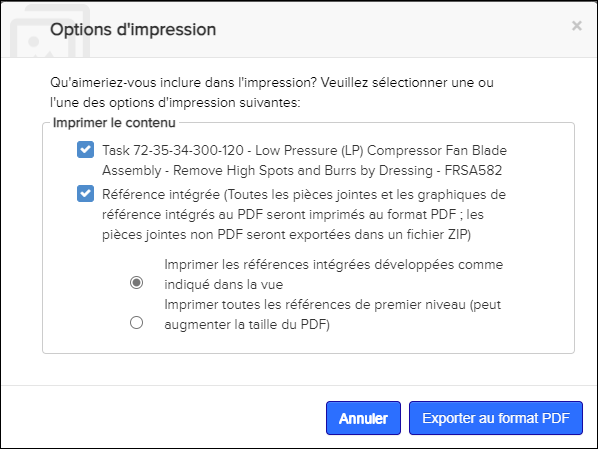
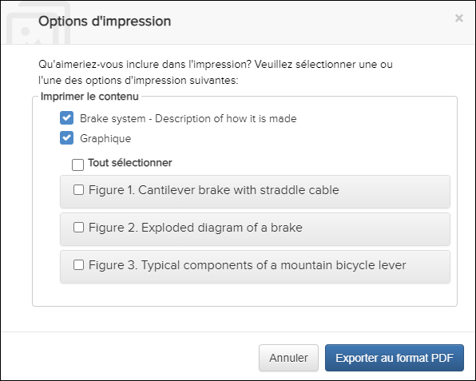

| Option d'impression | Résultat |
|---|---|
| <Contenu du document> | Produit un PDF avec le contenu original. Remarque : Les références
incorporées, indiquées par dans le document, ne sont pas
développées dans le PDF.
|
| Graphique | Pour les DM/Tâches/Fragments qui ont des graphiques, cette option
est présente et cochée par défaut. Il produit un PDF avec le contenu
original suivi des graphiques. Remarque : La configuration actuelle défaut,
l'application a une limite de 40 graphique par document dans la
sortie d'impression. Si le nombre de graphique dépasse cette limite,
l'utilisateur sera invité à réduire le nombre de graphique dans une
fenêtre de sélection.
|
| Options d'impression graphique (configuration) | Administrateurs, vous pouvez configurer les options d'impression
des graphiques pour contrôler si les graphiques s'impriment avec le PDF
ou limiter le nombre de graphiques disponibles à
sélectionner.Reportez-vous à la rubrique "Configuration des options
d'impression pour les graphiques" dans le Flatirons Pinpoint
Configuration Guide pour plus de détails. Les options
disponibles pour les utilisateurs dans la boîte de dialogue
Options d'impression pour l'impression de
graphiques dépendent de la configuration.
Remarque : Les options
disponibles pour les utilisateurs dans la boîte de dialogue
Options d'impression pour
l'impression de graphiques dépendantes de la
configuration.
Reportez-vous aux exemples d’options
d’impression graphique ci-dessous. |
| Pièces jointes | Pour les DM/Tâches/Fragments qui a des pièces jointes, cette option est cochée par défaut et générera un PDF du contenu original suivi des pièces jointes. Une liste des pièces jointes est disponible au début du PDF. Décocher l'option Pièce jointe générera un PDF du contenu original sans pièces jointes. |
| Référence intégrée | Cochez cette case pour afficher les options d'impression des références intégrées. |
| Référence intégrée: Imprimer la référence intégrée développée comme indiqué dans la vue | (Par défaut) Produit un PDF avec le contenu original et toutes les
références développées ouvertes dans la publication
|
| Référence intégrée: imprimer toutes les références de premier niveau (peut augmenter la taille du PDF) | Produit un PDF avec un contenu original et tous les liens de
référence intégrés étendus à un seul niveau.
|
| Imprimer le contenu non applicable (text barré) | Cochez cette case pour inclure le contenu non efficace lors de l'impression. Le contenu apparaît sous forme de texte barré dans le PDF. |
| Imprimer les lignes sélectionnées du(des) tableau(x) | Cette case à cocher est activée par défaut lorsque les lignes du tableau sont sélectionnées pour être imprimées. |
Effectuez ces étapes:
-
Cliquez l'icône
Imprimer dans la Barre d’action
Remarque : L'icône Imprimer peut être située dans le menu déroulant
 Autres actions si la largeur de votre page est
inférieure ou égal à 1280 pixels.
Autres actions si la largeur de votre page est
inférieure ou égal à 1280 pixels.La boîte de dialogue Options d'impression apparaît:

Boîte de dialogue Options d'impression
Si votre administrateur a configuré les Références intégrées pour ne pas s'imprimer, cette option n'est pas disponible dans la boîte de dialogue Options d'impression. Un message s'affiche pour imprimer la référence intégré séparément, par exemple:
Message Imprimer les références intégrées séparément
Lorsque l'efficacité est définie, vous pouvez choisir de masquer ou d'afficher le contenu non efficace lors de l'impression. Par défaut, la case Imprimer le contenu non applicable (text barré) est décochée et le contenu non effectif ne s'imprime pas. Si vous activez la case à cocher, le contenu non effectif est inclus en tant que texte barré dans le PDF.Remarque : Cette case à cocher n'est pas disponible dans la boîte de dialogue Options d'impression si l'efficacité n'est pas définie.
Boîte de dialogue Options d'impression (Ensemble d'effectivité)
Administrateurs, cette option est disponible par défaut lorsque l'efficacité est définie. Vous pouvez activer/désactiver cette option. Reportez-vous à "Activer/Désactiver l'impression de contenu non efficace" dans Flatirons Pinpoint Configuration Guide.
Lorsque la fonction Imprimer la ligne sélectionnée est activée, vous avez la possibilité de sélectionner les lignes à imprimer à partir de grands tableaux. L'option apparaît au-dessus du tableau. Par example:
Sélectionner les lignes du tableau
- Cliquez sur . Des cases à cocher apparaissent devant
chaque ligne. Par example:

Sélectionner les lignes du tableau (cases à cocher)
- Sélectionnez les lignes que vous souhaitez imprimer. Cochez la case
dans l'en-tête du tableau pour sélectionner toutes les
lignes.Remarque : Vous pouvez sélectionner des lignes de plusieurs tableaux à imprimer.Remarque : Sélectionnez pour masquer les cases à cocher et décochez celles sélectionnées.
- Cliquez sur l'icône
Imprimer dans la Barre
d'action.
La boîte de dialogue Options d'impression s'affiche:

Options d'impression Dialog (Imprimer les lignes du tableau)
Remarque : Si le contenu ne parvient pas à être téléchargé/exporté, un message "Échec de l'exportation du document" s'affiche.Administrateurs, l'option Imprimer les lignes sélectionnées est activée par défaut pour les tables prises en charge. Vous pouvez activer/désactiver cette option. Reportez-vous à "Enable/Disable Printable Table Row Feature" dans Flatirons Pinpoint Configuration Guide.
- Cliquez sur . Des cases à cocher apparaissent devant
chaque ligne. Par example:
- Document (s) principal (s) PDF, y compris les graphiques en ligne (si l'option est de les afficher en ligne)
- Pages de garde des pièces jointes (avec une colonne dans le tableau indiquant si la pièce jointe est un supplément ou une référence intégrée)
- Suppléments PDF
- PDF de référence intégrée, y compris les graphiques en ligne pour chaque document (si l'option est de les afficher en ligne)
- Tous les graphiques (si l'option est de les afficher à la fin du PDF)
Exemples d'options d'impression configurées pour les graphiques
- Imprimez tous les graphiques.Cochez la case Graphiques pour imprimer tous les graphiques avec le PDF.
Imprimer tous les graphiques

- N'imprimez aucun graphique.La case Graphiques n'est pas disponible pour sélectionner les graphiques à imprimer avec le PDF.
Imprimer aucun graphique

- Imprimez <n> graphiques.Remarque : La valeur de <n> peut être n’importe quel entier positif non nul.Cochez la case Graphiques.Si le nombre de graphiques dépasse le nombre configuré, une case Sélectionner tout est disponible et décochée par défaut.Lorsque vous cochez la case, tous les graphiques sont sélectionnés et imprimés avec le document.Vous pouvez également sélectionner des graphiques individuels.Remarque : La demande d'impression peut échouer si vous sélectionnez trop de graphiques, en fonction des ressources de l'environnement et des tailles des graphiques.Si l'impression de tous les graphiques échoue, Flatirons Solutions vous recommande de sélectionner uniquement un sous-ensemble de graphiques.
Imprimer (Sélectionner tout)

Il existe des configurations que votre administrateur peut effectuer pour personnaliser l'impression. Administrateurs, reportez-vous à Configurations d'impression.